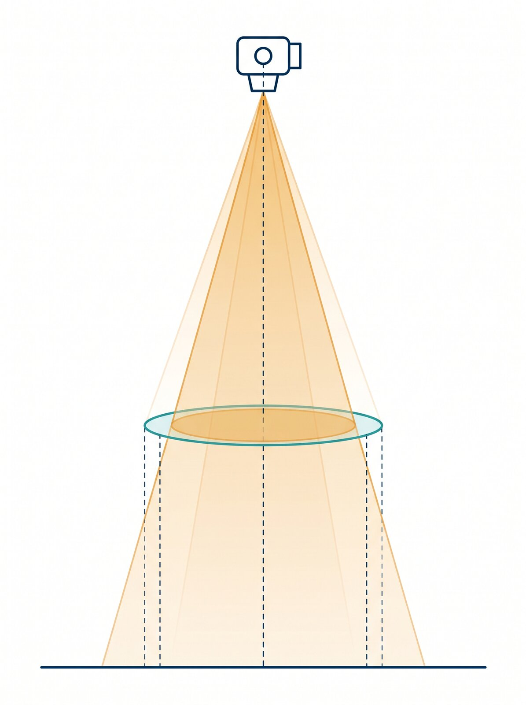
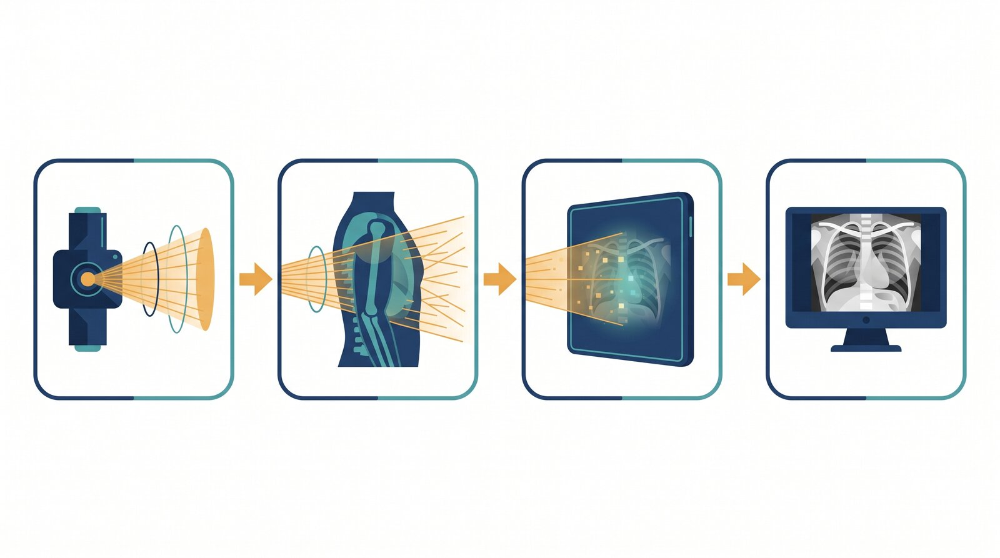
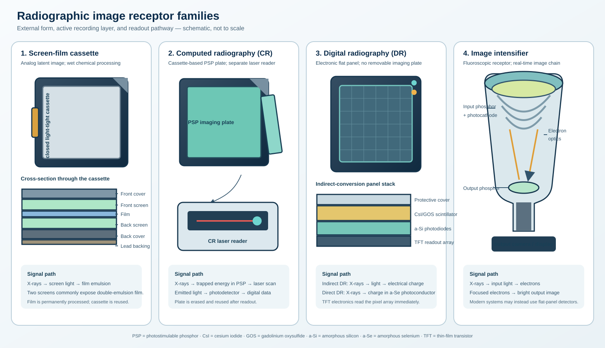

About This Virtual Lab
This lab is a fully interactive digital simulation designed to build your conceptual mastery of the imaging chain before you work with real equipment. Every activity below uses a clickable interactive diagram, a drag-and-drop ordering activity, or a matching exercise to walk you through the X-ray tube, cassettes, and receptors step by step — so no prior familiarity with the equipment is assumed, and you can repeat any activity as many times as you like until the concept clicks.
Student Information
Your progress auto-saves in this browser as you work. Use "Export JSON Backup" in the footer bar if you switch devices.
Learning Objectives
- 1Describe how X-rays are produced inside an X-ray tube and identify its main components.
- 2Explain the four stages of radiographic image intensity formation, from beam production to the final image.
- 3Identify and compare the major image receptor types used in radiography and fluoroscopy: film, CR, DR, and image intensifiers.
- 4Distinguish between the radiographer's image recording role and image analysis role.
- 5Recognize the basic geometric concepts (SID, SOD, OID) that govern how the beam travels from tube to receptor.
- 6Relate each stage of image formation to the image quality factors that will be studied in later labs.
- 7Apply this conceptual model to a simulated clinical scenario and submit a complete, professional lab report.
Background: How Is a Radiographic Image Made?
1.1 What Is a Radiograph?
A radiograph is a two-dimensional image created when X-rays pass through a patient's body and are captured by an image receptor. Different tissues absorb (attenuate) the X-ray beam by different amounts — dense structures like bone absorb more, so less radiation reaches the receptor beneath them, producing a lighter area; soft tissue and air-filled spaces absorb less, letting more radiation through and producing a darker area. This pattern of varying beam intensity is what forms the diagnostic image.
1.2 The X-ray Tube: Where the Beam Begins
Every radiographic exposure begins inside an evacuated glass/metal X-ray tube housed in a protective, oil-filled shell. Two key electrodes face each other inside the tube:
- Cathode (–): Contains a coiled tungsten filament. When heated by an electric current, it releases a cloud of electrons through thermionic emission.
- Anode (+): A rotating disc target (usually a tungsten-rhenium focal track) struck by the accelerated electrons. Roughly 1% of their kinetic energy becomes X-rays in a diagnostic tube; nearly all the remainder becomes heat.
The X-rays produced travel in many directions from the focal spot, but only the useful beam exits through the low-attenuation tube window. Inherent filtration from the tube assembly and specified added aluminum or copper filtration remove low-energy photons. Downstream, the collimator uses two pairs of adjustable lead shutters to restrict the field to the anatomy of clinical interest, reducing unnecessary patient exposure and scatter.
1.3 The Geometry of the Beam Path
Once the beam leaves the tube, its path is described using three key distances, which you will explore quantitatively next week in Lab 2:
Tube target to the image receptor
Tube target to the patient/part being imaged
Patient/part to the image receptor
A quick preview of this geometry is shown below — you will manipulate these distances live with sliders in Lab 2.

1.4 The Four Stages of Image Intensity Formation
Every radiograph passes through four distinct stages before you see the final image. Understanding this chain is essential because every image quality problem you will study in this course traces back to one (or more) of these four stages:
- Primary Beam Propagation — X-rays travel from the tube target to the patient's skin surface. Intensity here depends on kVp, mAs, filtration, focal spot size, and distance from the source (inverse square law).
- Patient Interaction — The beam is attenuated as it passes through tissue via photoelectric absorption and Compton scattering, producing the "remnant" or exit beam. This depends on patient thickness, tissue density, and atomic number.
- Image Capture — The remnant beam strikes the image receptor. The captured signal depends on receptor sensitivity, dynamic range, and intrinsic noise/resolution.
- Image Processing — The captured data is converted into a viewable image: chemical development for film (producing optical densities), or computer processing for digital receptors (producing numeric pixel values).

1.5 The Radiographer's Two Roles
As the radiographer (RT), your job spans two connected responsibilities:
Image Recording
Choosing/setting up the correct receptor, preparing and positioning the patient, selecting technical/exposure factors, and properly processing the image.
Image Analysis
Confirming correct anatomy was recorded, judging overall image quality, evaluating image display, and deciding whether additional images are needed.
Station 1 — X-ray Tube & Beam Production
Click each numbered marker on the scientific tube cutaway below to identify the component and reveal its function. Identify all 6 markers to complete this station.
| # | Component |
|---|---|
| 1 | Cathode assembly |
| 2 | Electron stream |
| 3 | Rotating anode and focal spot |
| 4 | Rotor and stator |
| 5 | Tube window and filtration |
| 6 | Collimator |
Station 2 — Order the Image Formation Stages
The four stages below have been shuffled. Drag them into the correct order — from the moment the beam is produced to the moment the final image appears — then click Check Order.
Station 3 — Image Receptor Family Explorer

Click a description on the left, then click the matching receptor name on the right. All four must be matched correctly to complete this station.
Station 4 — Sort the Radiographer's Tasks
Click a task on the left, then click the role category on the right it belongs to: Optimal Image Recording or Optimal Image Analysis. Sort all 8 tasks correctly to complete this station.
Knowledge Check
Lab Worksheet — Reflection & Analysis
A. Component Function Recap (from Station 1)
Fill in the function of each X-ray tube component in your own words.
| Component | Function (in your own words) |
|---|---|
| Cathode | |
| Anode | |
| Tube Window | |
| Collimator |
Grading Rubric
Instructors: enter final scores in the right-most column during grading. Students: use this to self-assess before submitting.
Generate Your Submission
Ready to Submit?
This generates a printable report containing your student info, all worksheet responses, simulation results, knowledge-check scores, and the rubric — ready to print/save as PDF and upload to the LMS.